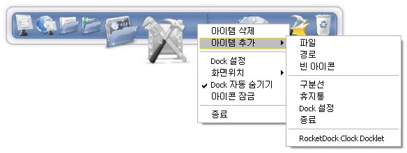
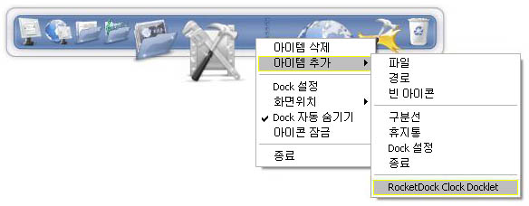
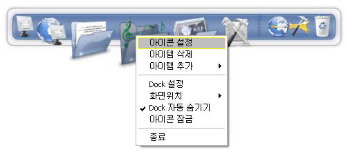
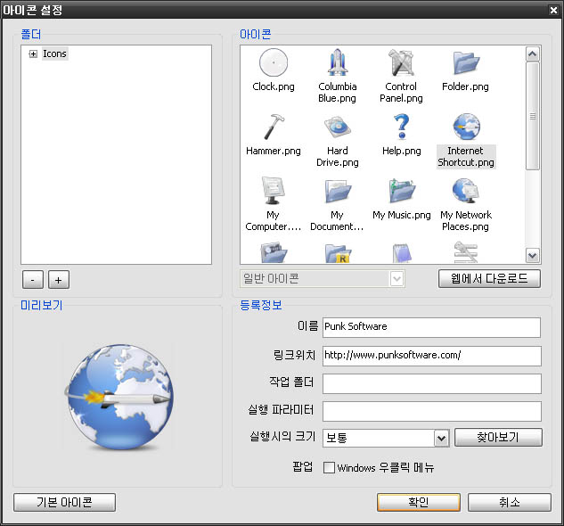
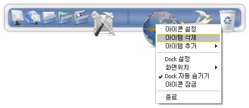
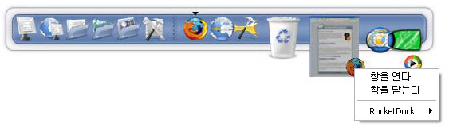
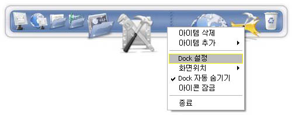

매킨토시 사용자의 화면 밑에 떠있는 작은 아이콘 바를 보신 적 있습니까? 이것을 Dock이라고 합니다. 본 적 없다는 분들을 위해 말씀드리자면, Dock이라는 건 배경이 비치고 아이콘을 늘어놓을 수 있는, 화면 가장자리에 두는 툴바 같은 겁니다. Dock의 기능은, 사용하는 프로그램과 단축 아이콘들을 잘 모아 놓아 어질러진 데스크탑을 정리하는 데 있습니다.
Afrikaans, Albanian, Arabic, Bangla, Brazilian Portuguese, Bulgarian, Catalan, Chinese Simplified, Chinese Traditional, Croatian, Czech, Danish, Dutch, English, Finnish, French, Galician, Georgian, German, Greek, Hebrew, Hungarian, Indonesian, Italian, Japanese, Korean, Norwegian, Persian, Polish, Portuguese, Romanian, Russian, Serbian (Cyrillic), Serbian (Latin), Sinhala, Slovak, Slovenian, Spanish, Swedish, Thai, Turkish, Ukrainian
RocketDock을 설치했다면 제일 먼저 해보고 싶은 것은 역시나 아이콘 추가겠지요.
데스크탑, 탐색기 창, 빠른실행 바, 시작 메뉴... 거의 아무 데서나 RocketDock에 아이콘을 끌어넣기만 해도 (드래그 앤 드롭) 됩니다.
또다른 방법으로는 RocketDock에 오른쪽 클릭을 한 뒤에 "아이템 추가" 메뉴로 들어가는 방법이 있습니다.
여기서 추가로 선택할 수 있는 하위 메뉴가 있습니다. 하나하나 봅시다.
Docklet이란 RocketDock 안에서 돌아가면서 한 가지 정해진 일을 하는 미니 어플리케이션 같은 것입니다. 비었는지 찼는지 알아서 변하는 휴지통에서부터 시스템 자원사용 표시기까지 여러가지 있습니다. 이것을 사용하려면, RocketDock의 Docklets 디렉토리에 풀어놓으면 됩니다.
C:\Program Files\RocketDock\Docklets (초기설정 기준 위치)
이후부터 RocketDock에 오른클릭하여 "아이템 추가" 메뉴로 들어가면 설치하신 Docklet이 밑에 추가로 나오는 걸 볼 수 있습니다.
주의: RocketDock은 기본적으로 ObjectDock에서 사용하는 docklet만을 지원합니다.
RocketDock에 있는 모든 아이콘을 일일이 설정 가능합니다. 아무거나 바꾸고 싶은 아이콘에 오른쪽 클릭하고 "아이콘 설정"을 선택하기만 하면 됩니다.
선택한 항목의 설정을 바꿀 수 있는 창이 뜰 것입니다.
RocketDock 아이콘 디렉토리 안에 있는 모든 리스트들이 보일 것입니다.
C:\Program Files\RocketDock\Icons (초기설정 기준 위치)
이 디렉토리에 어떤 아이콘이든 추가해 사용할 수 있습니다. [+]와 [-] 버튼은, RocketDock 아이콘 디렉토리 외의 다른 디렉토리를 추가/삭제하는 데 씁니다.
"폴더"에서 선택한 폴더에 있는 모든 아이콘을 볼 수 있습니다.
밑에 있는 드롭다운 메뉴 (대개의 경우 '일반 아이콘'이라고만 나오고 사용 불가능 상태) 는,
경우에 따라 상태가 틀려지는 아이콘, 예를 들면 휴지통 등에 씁니다.
아이콘 란에서 선택한 아이콘을 크게 볼 수 있습니다.
아이콘에 이름이 뭐라고 뜨는지, 아이콘이 어디에 연결되었는지, 그 외의 특수한 동작 등을 지정할 수 있습니다.
두가지 방법으로 RocketDock에서 항목을 제거할 수 있습니다. 첫번째는 RocketDock에서 드래그해서 꺼내기만 하면, 그냥 사라집니다. 두번째는 아이콘에 오른클릭 해서 "아이템 삭제"를 선택하면 됩니다.
구분선도 똑같은 방법으로 없앨 수 있습니다. Docklet은 드래그해서 꺼내는 방법으로만 없앨 수 있습니다. (오른클릭은 불가)
파일이나 폴더를 dock에 있는 항목에 드래그할 수 있습니다.
파일이나 폴더를 (dock에 있는) 어떤 응용프로그램 아이콘에 끌어넣을 경우, 만일 그 응용프로그램이 지원하는 파일이라면 응용프로그램이 실행되어 파일을 엽니다.
예를 들어 .MP3 파일을 윈앰프 아이콘에 끌어넣으면 윈앰프가 실행되며 그 MP3을 플레이하기 시작합니다. dock에 있는 폴더 항목에 파일이나 폴더를 끌어넣을 경우에는 그 폴더로 복사가 이루어집니다. 파일이나 폴더를 dock에 있는 휴지통에 끌어넣어도 마찬가지로 삭제됩니다.
모든 것이 데스크탑이나 탐색기에서 하던 그대로 똑같이 반응합니다.
일반 설정에서 "실행중인 창을 Dock으로 최소화"를 켜놨다면, 최소화시킨 프로그램 창은 dock 위에 추가한 아이콘처럼 보일 것입니다. 이런 창 아이콘은 dock 위에서는 맘대로 끌어서 위치를 바꿀 수 있지만, dock 밖으로 끌어내서 없애버릴 수는 없습니다. 윈도우 비스타에서는, 퍼포먼스 설정에서 Desktop Composition을 켰을 경우, 실시간으로 변하는 프로그램 화면을 미리보기처럼 보여줄 것입니다.
이런 창 아이콘에 오른클릭을 하면 "창을 연다"나 "창을 닫는다"를 선택할 수 있습니다. 그냥 왼쪽 클릭을 하면 창을 다시 엽니다.
이 설정을 켜둔 상태에서 특정한 실행창이 dock으로 최소화되는 것을 막으려면, [ctrl]키를 누른 상태에서 최소화를 눌러주면 됩니다.
dock에 오른 클릭하면 몇가지 설정을 바로 변경할 수 있습니다.
화면 위치, 자동 숨기기, 아이콘 잠금, 모니터 설정을 선택할 수 있습니다. 또한 이 오른 클릭에서도 "Dock 설정"을 열 수 있기 때문에, 이 아이콘을 꼭 dock에 남겨둘 필요는 없습니다.
"Dock 설정"의 어느 화면에서든 밑에 "초기설정"이라는 버튼을 볼 수 있는데, 이것을 누르면 모든 설정을 처음 설치했을 때의 설정으로 리셋할 수 있습니다.
주의: 아이콘 설정에 관해서는 영향을 미치지 않습니다.
Ctrl+Alt+R을 누르면 RocketDock이 숨어서 완전히 작동하지 않게 됩니다. 다시 누르면 살아납니다.
RocketDock에 대해 좀더 의문점이 있으시면 포럼을 찾으시면 됩니다. (영어 페이지니까 조심하세요) RocketDock을 입맛에 맞춰 설정하는 여러가지 튜토리얼도 있습니다.
"내가 이거보단 훨씬 잘 한다!"고 자신할 수 있을 만큼 이 번역이 맘에 안 드시거나, 버전업이 한참 되었는데 새로 번역할 사람이 안 나타난다면 포럼을 찾아 주시기 바랍니다.
언어 파일을 수정해야 될 경우에는 여기의 설명을 우선 참조해 주시기 바랍니다.
남들에게도 이 소프트웨어의 입소문을 내주시면 크게 도움이 됩니다. 여러분의 웹사이트에 링크만 걸어주셔도 좋아라 합니다. 포럼에서 배너를 가져가시거나 직접 만들어 올려주셔도 좋습니다.
Punk Software Swag Shack이라는 온라인 상점도 돌리고 있습니다. T셔츠, 마우스패드, 모자 같은 걸 준비했습니다. 기부 대신이라고 생각하고 굶어죽는 프로그래머들 살려 주시면 감사하겠습니다^^
마지막으로 강조하지만, 전부 영어 페이지입니다. 영어 못하는 사람은 뻘짓 하다가 나라 망신 시키지 맙시다. 부탁해요!